| 日付 | 2015年3月22日（日） |
|---|---|
| 山域 | 阿武隈周辺 |
| メンバー | 家族（妻、長女・4歳、長男・1歳） |
| 山行形態 | 子連れ日帰り |
| アクセス | 車 |
| ルート (Map) | 市営駐車場 (8:35) - (10:14) 弁慶茶屋 - (10:57) 女体山 (11:02) - (11:19) 広場 (12:21) - (12:44) 男体山 - (14:34) 筑波山神社 - 市営駐車場 |
今週末は久々の晴れ。快晴とはいかないが、山に出かけることにする。
当初は丹沢の大山を予定していたが、南部は雲が広がるという予報が出たため
急遽、目的地を筑波山に変更する。筑波山に行くのは2度目だ。
市営駐車場に車を停める。標高210m。
比較的大きな駐車場だが、すでに3割ほど埋まっている。
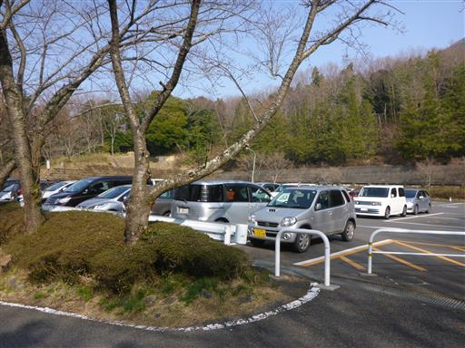
ホテルや土産物屋が軒を連ねる車道を歩いて登山口を目指す。
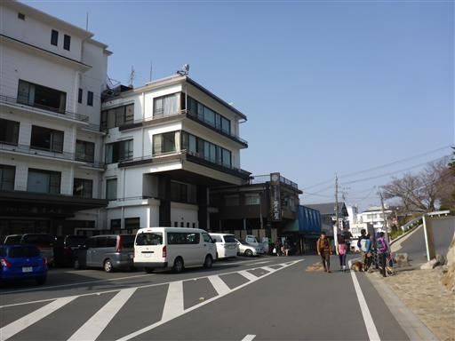
筑波山神社に到着。見学は後回しにして、まずは山に向かう。
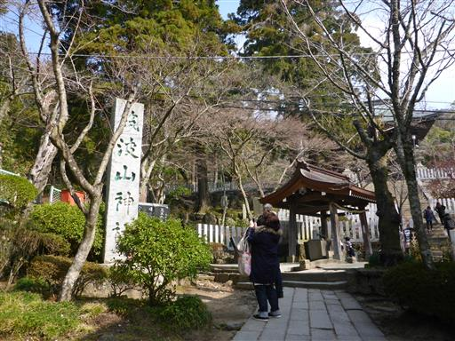
昭和14～18年に造られた堰堤。かなり古いもので貴重なため、保存されている。
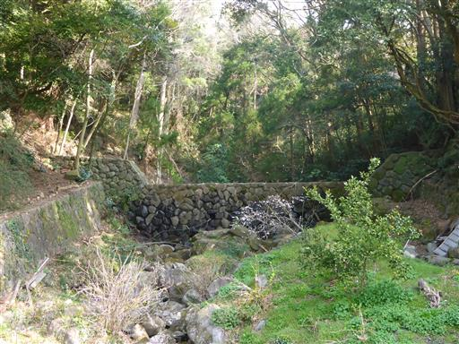
登山道入口に到着する。今日は白雲橋コースを登る予定だ。
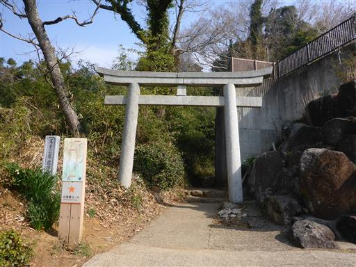
最初は階段が延々と続く。
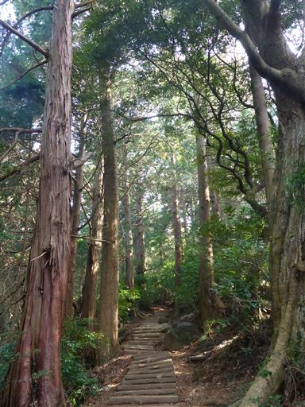
マイナーな登山道かと思ったら、案外人が歩いている。
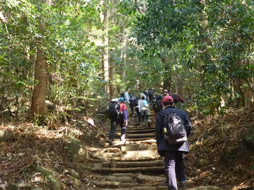
登山道の周辺は自然が良く残っている。大木の数も多い。
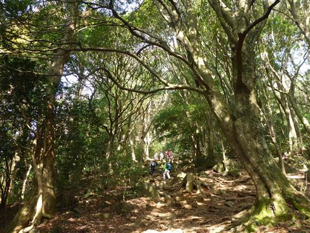
急斜面に樹木が生い茂っている。
筑波山は植物の垂直分布が見られる山として有名だ。
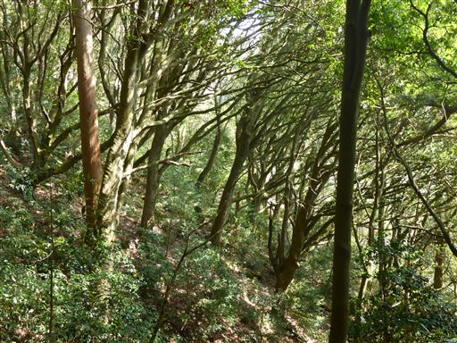
大きな杉の木が所々に立っている。
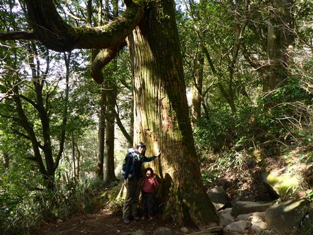
おたつ石コースとの合流点に到着。人の数が多い。
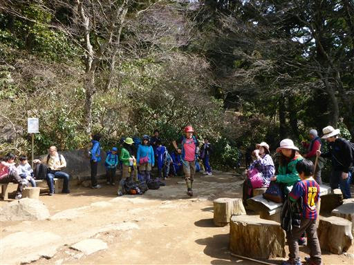
弁慶七戻り。石でできた自然のトンネルだ。
ようやく娘のテンションがあがる。
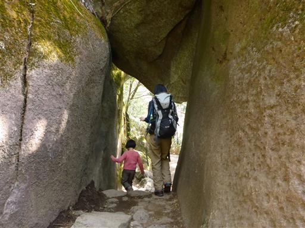
岩の上にある神社に通じる階段を登る。転げ落ちそうなほど急な階段だ。
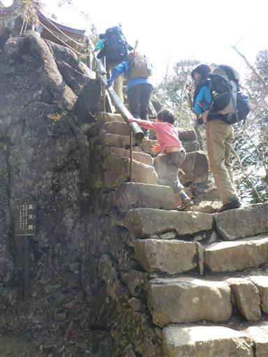
登りついた高台に稲村神社が建っている。
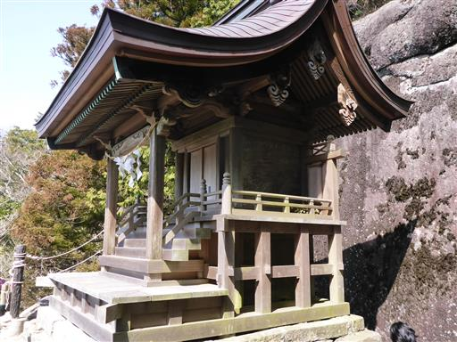
岩と岩の隙間から木が生えている。
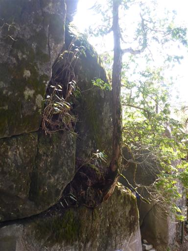
母の胎内くぐり。岩の穴を潜ることができる。
子供を背負っていると結構きつい。
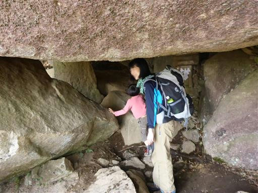
出船入船。この岩も穴が空いている。この辺りは奇岩が多い。
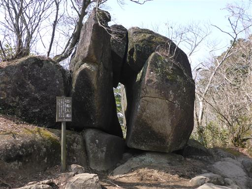
道が平坦になると、目の前に女体山が見えてくる。なかなか鋭い山容だ。
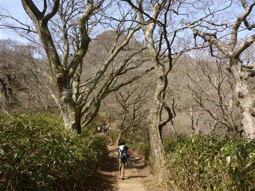
大仏岩。下から見ると大仏の形に見える。
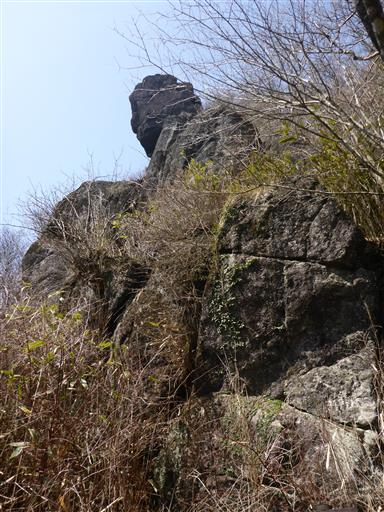
山頂直下の急な斜面を登りきると、女体山山頂に到着する。標高877m。
ここが筑波山の最高峰だ。
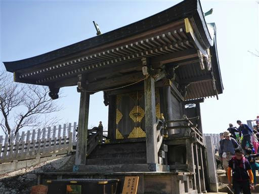
山頂は狭く、人で溢れている。
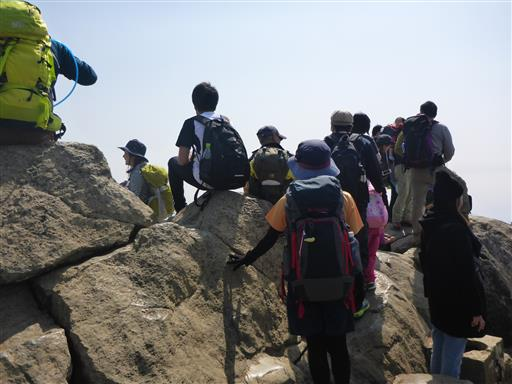
筑波山は2つのピークを持つ双耳峰だ。お隣の男体山が良く見えている。
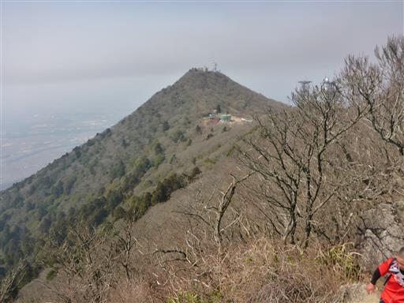
今日は春霞が酷く、それ以外の景色はほとんど見えない。
混雑がひどいため、早々に山頂を脱出する。
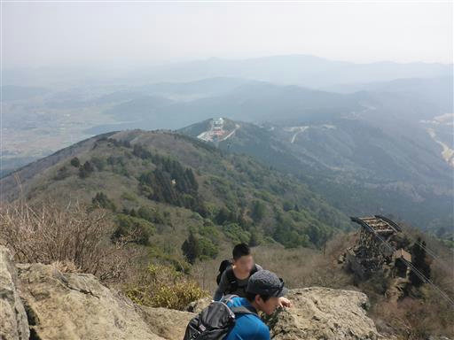
男体山と女体山の間にある広場で昼食をとる。
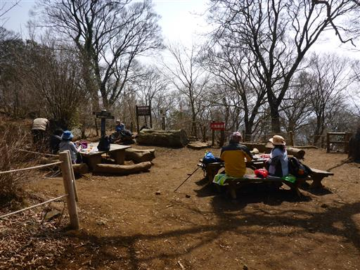
昼食をとったら男体山を目指す。
男体山直下の広場はケーブルカーの山頂駅になっていて、かなり賑わっている。
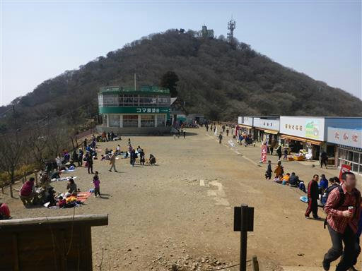
男体山への登りも急坂が続く。
昼食のため一度足を止めてしまうと、その後の登りが結構辛い。
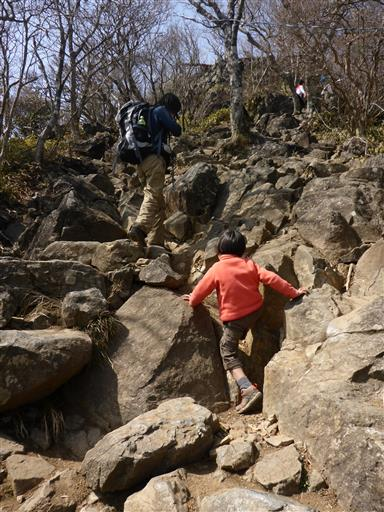
男体山の山頂に到着する。標高871mで女体山より6m低い。
こちらの山頂も狭く人が多いので、早々に退散する。
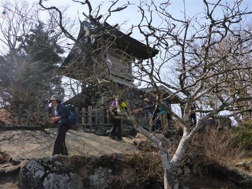
どこもかしこも混んでいる。こんなに人気の山とは思わなかった。
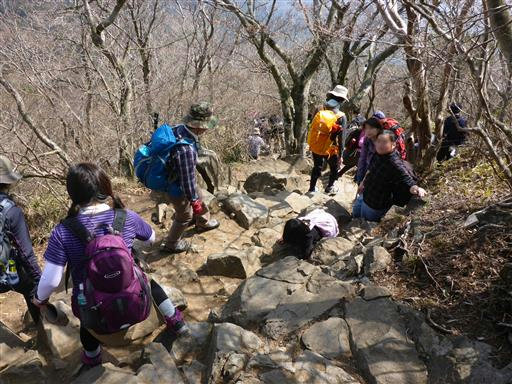
男体山から女体山を望む。男体山を下りて広場に戻ったら、御幸ヶ原コースを下る。
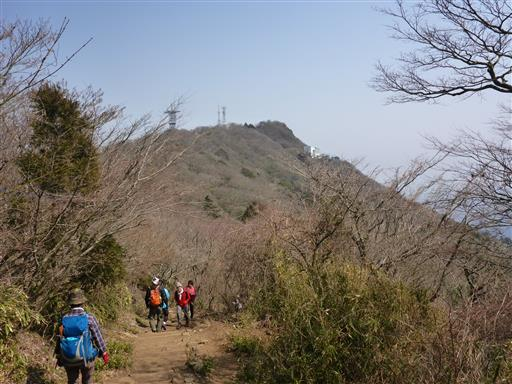
こちらの登山道にも、大きな杉があちらこちらに林立している。
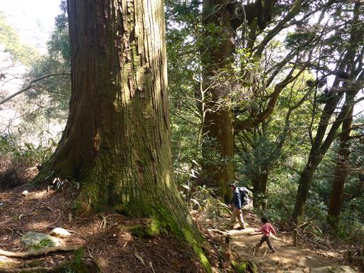
男女川を渡る。筑波山が源流の小さな川だ。
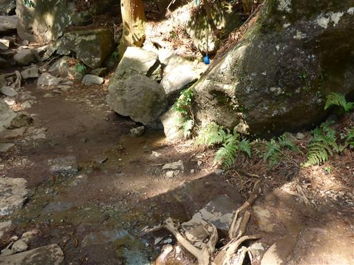
一際大きな杉が立っている。2本の杉が合体したような形で、どちらも巨木だ。
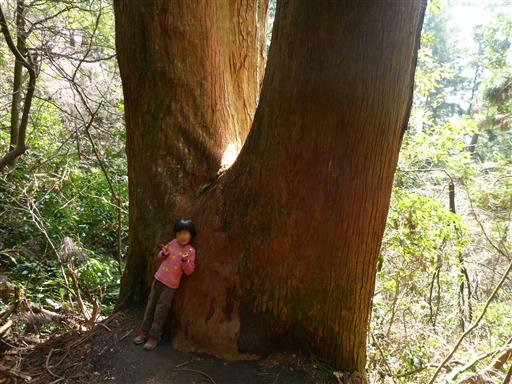
ケーブルカーの線路と登山道が接するところで、ちょうどケーブルカーが通過する。
ここがすれ違いポイントになっている。
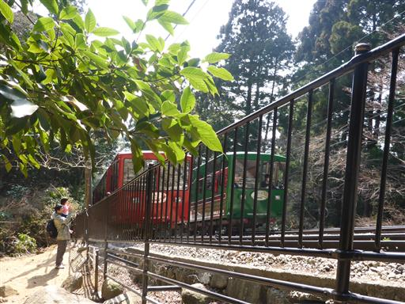
筑波山神社に下山する。
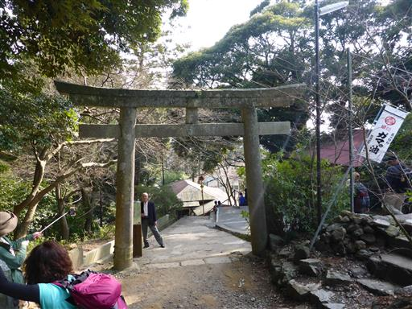
せっかくなので筑波山神社にお参りしていく。
ずっとキャリアに乗って退屈していた息子を下ろして少し歩かせる。
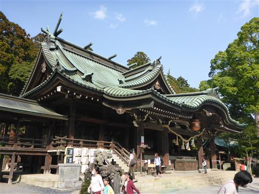
正面には大きな鈴がつけられてる。重さは138㎏もあるらしい。
お土産用にきれいな鈴が売られていたため、息子と娘に1つずつ購入する。
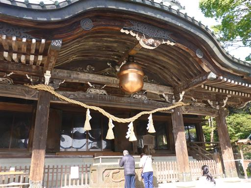
随神門。立派な門で茨城県の指定文化財になっている。
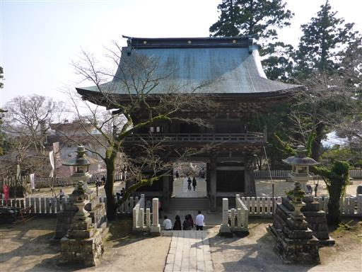
神橋。こちらも立派な橋だが封鎖されていて渡ることはできない。
筑波山神社を見学したら、駐車場に戻る。
娘は4歳になって初めての山登り。あまり楽しくはなかったようだが、さほど文句も言わず歩いてくれた。
4時間コースを歩けるようになると、今後行ける山の選択肢も広がりそうだ。
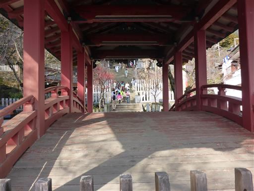